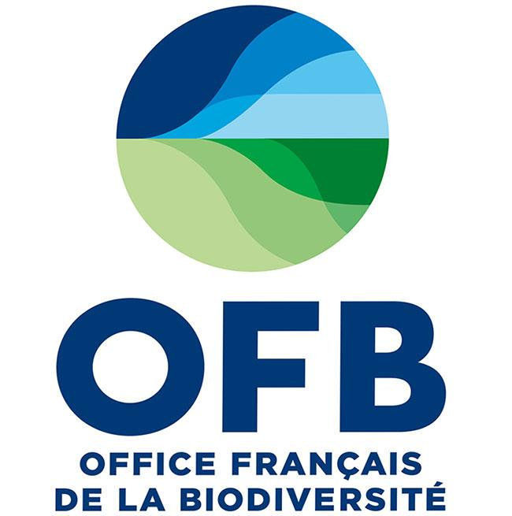

OBADE : Outils d analyses pour la BAse de Données ESTAMP
Financé par le Ministère de la Transition Ecologique et Solidaire
Résumé
OBADE propose d’analyser les données biologiques et sociales présentes dans la base de données BD ESTAMP afin de mesurer l’efficacité de certaines mesures du Plan d’Action pour le Milieu Marin (PAMM) Manche-mer du Nord (M308-MMN2, M307-MMN2 et M402-ATL2) et de développer un outil informatique permettant i) de réaliser des analyses scientifiquement robustes et ii) d’être utilisé par tout un chacun sans nécessité de compétences en analyses de données. Il s’articule de la manière suivante :
Un volet Rapportage, qui consiste en la création d’un outil automatique d’analyse des données d’usage qui en interrogeant la BD ESTAMP produira graphiques, statistiques et cartes. Cet outil permettrait d’harmoniser les pratiques, de valider la représentativité des données et de faciliter le rapportage pour animer l’Observatoire.
Un volet Expertise, qui consiste à analyser les données écologiques (ressources et habitats) et les données d’usages disponibles, valides, qualifiées et robustes de la BD ESTAMP. Ce volet permettra d’évaluer l’efficacité de l’Observatoire sur les ressources et/ou les habitats en les confrontant aux données de fréquentation et de sensibilisation.

Partenaires
Le GEMEL-Normandie
- Alexandrine Baffreau : Chargée de missions - experte en habitats macrobenthiques et cartographie
- Aurélie Garcia : Chargée de missions - experte gestion de projet et écologie des communautés macrobenthiques
- Olivier Timsit : Taxonomiste - expert en écologie des communautés macrobenthiques
Le Cnam-Intechmer

- Régis Gallon : Maitre de conférences - expert en écologie numérique - phycologue macrobenthique. Expérience en gestion et analyses de bases de données environnementales et biologiques.
L’URCPIE Normandie

- Léa Brieau : Animatrice de l’Observatoire des activités de Pêche à pied de loisir sur la façade Manche-Mer du Nord
L’Office Français de la Biodiversité

- Elodie GAMP : Chargée de mission “indicateurs et développements informatiques pour la gestion du milieu marin”